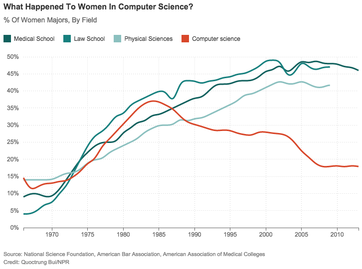

Women in tech: how to improve the industry
“Où sont les femmes?”
July 10th, 2015
“Où sont les femmes?”, litteraly translated: “Where are the women?”, is a question french singer Patrick Juvet already asked in 1977 (don’t judge my music taste, it’s not great music, but it got popular back then). He was wondering about the consequences of feminism, not something we will really be discussing today, but still, our friend Patrick is looking for women. And so is the tech industry!
If you are reading this blog, you are somewhat familiar with the tech industry and some of its issues, then you know that women are largely under-represented in this industry. And it’s a real problem, when there is no girl around, guys get awkward. The less diversity the more awkwardness, that may not sound like a genuine problem but it is and we’ll see later why. Another key problem is lack of diversity itself, because a lack of diversity in gender also means a lack of diversity in approaching problems and thinking through solutions. A tech industry with more women would be a more efficient and innovative industry.
First let’s try to understand what happened here. According to data gathered from the National Science Foundation Women were way more present in Computer Science departments of colleges in the mid eighties than they are today. The proportion actually flattened in 1984, then decreased uninterruptedly until it flattened out again in 2007.
So, what happened here!? The main explanation is mind-blowingly simple. I’m using “main” since there could be other assumptions. The first mainstream computers were not that smart, they were essentially used to play games and could some word processing, so they were essentially marketed to boys and men. Studies have shown that girls generally prefer reading when learning or entertaining themselves, they tend to stay away from video games. That may explain why girls are generally smarter, but that’s only a personal remark and, full disclosure, I completed 100% of Gran Turismo in the summer of ’98, “dumb boy” would apply to me. A few years on, the boys grow to careers in computer sciences, when girls are just not that into computers.
I used the adjective “main” earlier, because there is another self-reinforcing phenomenon at work. As the tech industry became a boys club, it became more and more awkward with girls. A good way to observe that was to attend tech conferences a few years back, it culminated in 2009 at a Ruby conference where someone gave a talk subtitled “Perform Like a Pr0n Star,” with sexy slides. This is disheartening, to say the least. There has been criminal indictments too. Since then, the industry started adopting stronger codes of conducts. But there is a long way to go.
So, “Où sont les femmes?”
Right here, at Dev Bootcamp! Coding bootcamps are increasingly shaking the tech industry, reshuffling the cards of education. Take the example of my DBC cohort: there are 13 girls out of 27 students, 48% of the cohort, more than twice the proportion found in computer science colleges! Talking’ ‘bout a revolution . This alone is the proof that this form of education is the future, what an uplifting prospect! All that remains is to teach old skeletons how to behave, the tech industry will then be genuinely better!